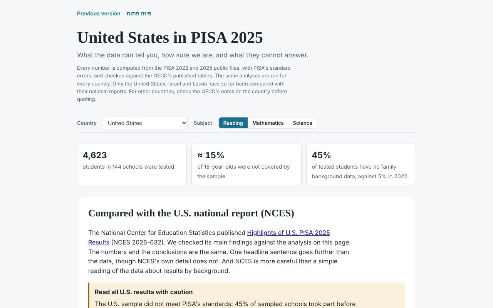
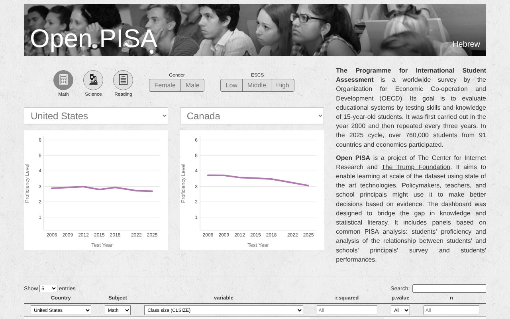
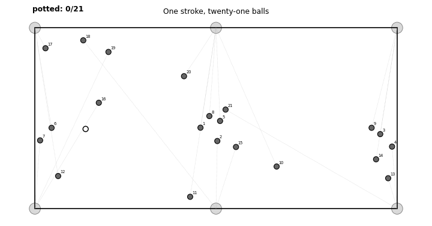

Software
Open PISA
-
Open PISA, 2025 edition. opisa.org · GitHubAn independent site that presents the PISA 2025 results for each country with their margins of error, compares them with national reports, and states what the data cannot show.

-
Open PISA, original dashboard. opisa.org/previous.html · GitHubAn interactive dashboard for comparing PISA mathematics, science, and reading scores across countries from 2006 onward, by gender and socioeconomic status, and for relating student and principal survey responses to performance. Developed at the Center for Internet Research, University of Haifa, with the Trump Foundation, and described in Kantor & Rafaeli (2020), Learning@Scale.

Research Code
-
One shot, twenty-one balls. GitHubCode and data for the search for a single snooker stroke that clears the whole table.
